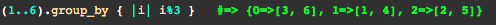
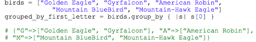

november 20,2014
Hi and welcome! The goal of this blog is to provide an explanation of the ruby method group_by. It is a great method to have in your arsenal.
Just as the name says it, group_by is a method that lets you group elements.
Pointers
- group_by will return a hash
- There are many ways that you can group (see examples below)

Source:(1)
In this example we check all elements, i.e 1,2,3,4,5,6 (remember 1..6 includes all elements and 1...6 will include from 1 to 5). It goes through each using the modulo operator and depending on the output it groups the elements into a hash. So in this example for 3%3 and 6%3 but return a 0 therefore the hash gives a key 0 and value of [3,6]. It does this for every element and groups accordingly.

Source:(2)
In this example we check all elements, and group by lenght of string.
Source:(2)
In this example we check all elements, and group by first letter.(by the way, see the name gyrfalcon? it is a really cool bird of prey)
Now it it up to your imagination, play with it and you will find really cool way to manage collections of data
Andy-dev —OVER AND OUTSources--Highly recommended for additional information
Source 1-Click Here
Source 2-Ruby Docs-Click Here